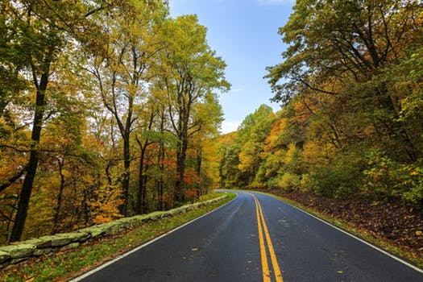

Franklin Breaks Record
 The sacred city of Machu Picchu (in Quechua: old mountain) is the greatest Inca masterpiece. Incredibly daring and inventive, it was built on the most difficult, wild and inaccessible mountain area available. It is known world-wide not only for its impressive and unique ruins, but also for its unusual location on the edge of an abyss, from which one can appreciate the vigorous waters of the Urubamba river.